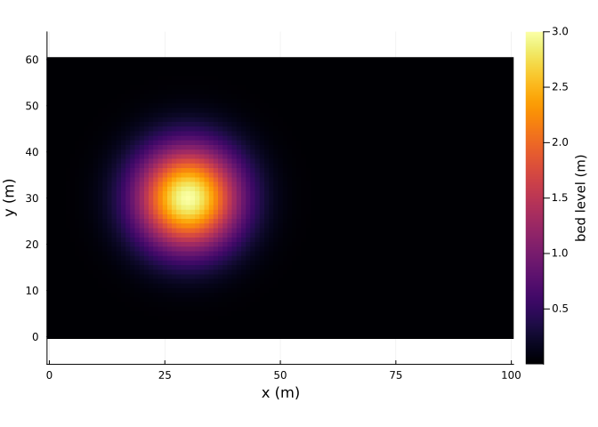
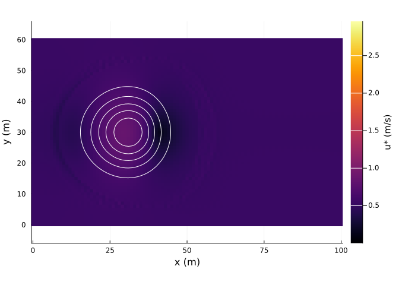
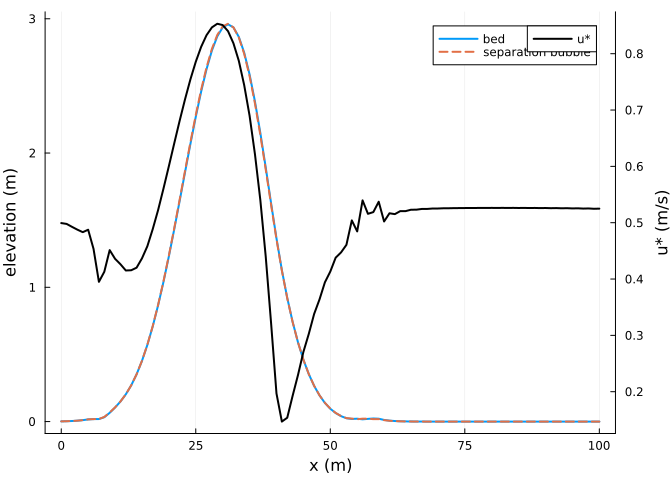
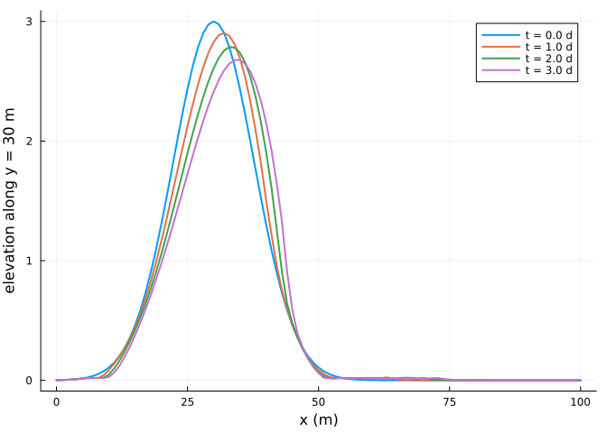

Dunes in two dimensions
Simon Frost
Overview
Over a dune the wind accelerates up the stoss slope and slows down in the lee. AeoLiS computes this perturbation of the shear stress with the spectral method of Weng et al. (1991) on a computational grid aligned with the wind, after smoothing steep lee slopes with a separation bubble, under which the shear stress vanishes (Kroy et al. 2002). This vignette runs a small dune on a non-erodible floor, a setting that makes it migrate as a barchan.
ENV["GKSwstype"] = "100"
using Aeolis
using PlotsA sand hill
xs = 0.0:1.0:100.0
ys = 0.0:1.0:60.0
X = [x for x in xs, y in ys]
Y = [y for x in xs, y in ys]
Z = @. 3.0 * exp(-((X - 30)^2 + (Y - 30)^2) / 120)
heatmap(xs, ys, permutedims(Z); aspect_ratio=:equal, xlabel="x (m)", ylabel="y (m)",
colorbar_title="bed level (m)")
The hill sits on a non-erodible floor at 0.01 m, and the wind blows along x at 12 m/s.
day = 86400.0
p = AeolisParameters(; xgrid_file=X, ygrid_file=Y, bed_file=Z, ne_file=fill(0.01, size(Z)),
th_nelayer=true, wind_file=[0.0 12.0 270.0; 365day 12.0 270.0],
process_shear=true, process_separation=true, process_avalanche=true,
solver=:pieter, boundary_offshore=:constant, boundary_onshore=:constant,
boundary_lateral=:circular, nlayers=1, layer_thickness=0.05,
grain_size=0.00025, method_grainspeed=:duran, L=50.0, l=1.0,
buffer_width=10.0, dt=3600.0, tstop=3day, output_times=day / 2,
output_vars=[:zb, :ustar, :zsep, :hsep, :qs])
sol = solve(AeolisProblem(p))AeolisSolution with 7 output times from 0.0 to 259200.0 s, retcode Success
saved: hsep, qs, ustar, zb, zsepShear over the hill
The shear velocity rises over the crest and is zero under the separation bubble in the lee:
heatmap(xs, ys, permutedims(sol[:ustar][:, :, 2]); aspect_ratio=:equal, xlabel="x (m)",
ylabel="y (m)", colorbar_title="u* (m/s)")
contour!(xs, ys, permutedims(sol[:zb][:, :, 2]); levels=0.5:0.5:3, color=:white)
j = 31
plot(xs, sol[:zb][:, j, 2]; lw=2, label="bed", xlabel="x (m)", ylabel="elevation (m)")
plot!(xs, sol[:zsep][:, j, 2]; lw=2, ls=:dash, label="separation bubble")
plot!(twinx(), xs, sol[:ustar][:, j, 2]; lw=2, color=:black, label="u*", ylabel="u* (m/s)",
legend=:topright)
Migration
The hill loses sand on its stoss side and gains it in the lee, so its crest moves downwind:
plot(xs, sol[:zb][:, j, 1:2:end]; lw=2, xlabel="x (m)", ylabel="elevation along y = 30 m",
label=permutedims(["t = $(t / day) d" for t in sol.t[1:2:end]]))
crest = [xs[argmax(sol[:zb][:, j, k])] for k in eachindex(sol.t)]
(times_days=sol.t ./ day, crest_x=crest)(times_days = [0.0, 0.5, 1.0, 1.5, 2.0, 2.5, 3.0], crest_x = [30.0, 31.0, 32.0, 33.0, 33.0, 34.0, 35.0])References
Kroy, Klaus, Gerd Sauermann, and Hans J. Herrmann. 2002. “Minimal Model for Aeolian Sand Dunes.” Physical Review E 66: 031302. https://doi.org/10.1103/PhysRevE.66.031302.
Weng, W. S., J. C. R. Hunt, D. J. Carruthers, et al. 1991. “Air Flow and Sand Transport over Sand-Dunes.” In Aeolian Grain Transport. Acta Mechanica Supplementum. https://doi.org/10.1007/978-3-7091-6703-8_1.